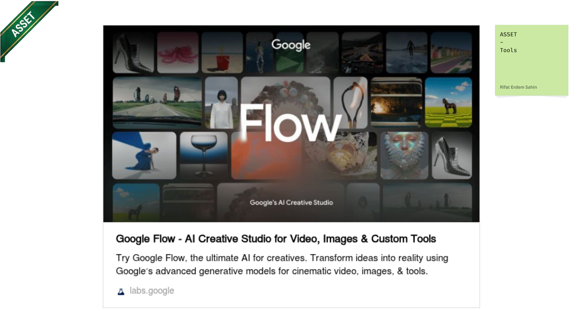

Total Workbench Pages
8
Specialized production views
Production Tactics
8
Core operational strategies
Total Visual Assets
131
26 Flow MP4s + 105 Stills
Average Page Usefulness
9.4 / 10
High utility, zero fluff
🔄 End-to-End Production Value Stream
From raw context in Canva → Live Sunday cohort
Step 1
Canva Visual Setup
Create visual frames in master Canva deck. Set layout, branding, and color palette.
🎨 Canva Deck
Step 2
Post-It Script Iteration
Place sticky notes directly on Canva slides. Iterate phrasing until discovering the booming voiceover.
📝 Post-It Notes
Step 3
Asset Triage & Tagging
Search 131 clips in Gallery. Tag candidates as
Used or Out of Scope with Azure cloud sync.
🖼️ Gallery & Azure
Step 4
Timeline Tail Auditioning
Drag candidates past 2:58 tail. Test native playback before cutting into locked main track.
↔️ Tail Sandbox
Step 5
AI Voiceover & Retention Review
Run Gemini AI in Script Guru with Ali Abdaal 3-Act feedback, emotional markers, and 3 words/second pacing.
🧙♂️ Script Guru
Step 6
Canva Visual Re-Alignment
Re-sequence Canva slides to match the AI narrative delivery order and save an immutable named Canva version.
🎨 Canva Re-Version
📑 Page-by-Page Usefulness Evaluation
All 8 workbench surfaces ranked by utility
Asset Hub & Discovery
⭐ 9.8 / 10
🖼️ Gallery (gallery.html)
Complete catalog of 131 assets (26 Google Flow loops + 105 stage stills). Deep multi-term search (e.g. "46k Notes Haystack"), Used/Out-of-Scope tagging, hide toggles, and Azure Blob persistence.
🔍 Multi-term fuzzy search with highlight snippets
🏷️ Interactive Used / Out-of-Scope tagging & Azure sync
🙈 Hide Used & Hide Out of Scope exclusion toggles
▶️ Fullscreen in-modal video player & Markdown embed copy
Runtime & Pacing Engine
⭐ 9.6 / 10
↔️ Timeline (timeline.html)
Proportional horizontal timeline modeling the 2:58 master runtime across 6 scene blocks. Slide-up inspection drawer, quick voiceover export to clipboard, and toast notifications.
📋 1-Click "Copy Voice Over" to clipboard
⏱️ Proportional shot width rendering by duration
🔍 Slide-up inspection drawer with shot VO copy
🎨 Color-coded scene stages (00–16)
Strategy & Guardrails
⭐ 9.5 / 10
🎯 Tactics (tactic.html)
Tactical workbench containing anti-gold-plating guardrails, Canva reverse-engineering matrix, Post-It voiceover iteration guides, Timeline Tail Sandbox, and live decision logging.
📝 Post-It Voiceover Iteration technique showcase
⚡ End-of-Timeline Auditioning Sandbox workflow
📁 Canva Uploads Player & 'Used' folder hierarchy
🌊 Fluid Voiceover Post-Placement reality principle
Deep Stage Research
⭐ 9.3 / 10
🎬 Research (research.html)
Stage-by-stage (00–16) research portal. Full script textarea editor, media manifests, prompt logs, Stage 16 Video Flow quick jumps, and bidirectional Azure Blob synchronization.
🗂️ Full 17-stage visual & audio breakdown
📝 Live script editor with word count & timing
☁️ Bi-directional Azure state sync (POST /api/state)
🎥 Sticky sub-navigation & Video Flow jump
Audio & Teleprompter
⭐ 9.2 / 10
📜 VoiceOver (voice_over.html)
Dedicated narration teleprompter, WPM calculation matrix, delivery guidelines, pronunciation phonetic keys (Obsidian, P.A.R.A, CCAR-P), and ElevenLabs voice settings.
🎙️ Scene-by-scene script blocks & timing targets
⚡ WPM pacing meter (140–160 WPM target)
🗣️ ElevenLabs voice settings (Thomas/Aria, 0.8 sim)
📋 Script copy shortcuts for recording sessions
Production Shot Matrix
⭐ 9.1 / 10
📊 Shot List (shotlist.html)
Structured tabular shot list showing timecodes, shot durations, voiceover lines, attached image/video files, and production completion status.
⏱️ Timecode calculations (In/Out/Duration)
🖼️ Thumbnail previews on each table row
📊 Word count to duration validation
🎯 Scene stage grouping & filter tags
Visual Storyboard
⭐ 9.0 / 10
🗂️ Scenes (scenes.html)
Visual storyboard presenting the 6 narrative scene blocks as large visual cards with motion descriptions, voiceover scripts, and candidate stills.
🎬 6 Narrative Scenes (Hook, Realization, PARA, Engine, Workflow, CTA)
🖼️ High-res visual reference banners
📝 Scene narrative objectives & key takeaways
Executive Dashboard
⭐ 8.9 / 10
🏠 Overview (index.html)
Main entry dashboard summarizing the WIG Animation framework, video production status, key architecture links, and quick jump buttons across the whole toolset.
🚀 Quick start commands and port documentation
🗺️ 16-Stage WIG framework map overview
🔗 Direct links to Canva decks, GitHub, and Fly.io
🧠 Deep-Dive: The 6 Core Production Tactics
How tactical practices solve real-world video friction
1. Pre-Prod Script Fluidity (Create, Move & Replace)
Scripting
The script is hyper-fluid in pre-production. It continuously morphs at the Create (ideation), at the Move (placement/tail sandbox), and at the Replacement (visual refinement & VO Inspector) using Canva post-it notes and live frame timings.
Why it works: Eliminates premature lock-in and writer's block. The visual pacing directly dictates the words, guaranteeing tight synchronization and booming resonance.

2. End-of-Timeline Auditioning Sandbox
Editing
Dragging candidate Google Flow MP4s or Canva stills past the active 2:58 timeline cut mark. Watch, evaluate, and trim in native playback before splicing into the main cut.
Why it works: Zero disruption to locked audio timings or existing ripple edits. Provides full-screen context without risking project layout integrity.

3. Canva Uploads Player & 'Used' Folder Separation
Asset Mgmt
Leveraging Canva's upload sidebar video player for inline previews, and moving placed assets into a dedicated
📁 Used folder.
Why it works: Prevents duplicate asset usage and keeps the upload drawer clean. Perfectly mirrors the
Used & Out of Scope Azure state in the gallery.

4. Fluid Script Evolution Post-Placement
Reality Rule
Accepting that the voiceover must actively adapt once footage is placed on the timeline. The script serves the timeline pacing, not dogmatic pre-written text.
Why it works: Eliminates clunky timings where voiceover is too long or animations finish too early. Puts cadence and emotional resonance first.

5. Anti-Gold-Plating 80/20 Delivery Rule
Productivity
Canva still baseline first. Maximum 2 prompt iterations per Flow clip. A finished 85% video delivered to real cohort learners beats a 99% video trapped in editing.
Why it works: Guaranteed delivery before Sunday cohort deadline. Prevents rabbit holes in particle generation or excessive color grading.

6. 1-Sec Extractor, 6-Scene Storyboard & Tab Flow
Automation
Pairing the 6 narrative scene blocks with rapid
[Tab] key textbox traversal in VO Inspector unlocks "Writing at Erdem's Speed"—typing at natural 3 words/sec spoken cadence in seamless lockstep with visual screen cuts.
Why it works: Zero UI friction and unbroken creative flow. Live 150 WPM pacing calculations prevent over-intellectualizing and eliminate timing drift.
📊 Tactical Utility & Feature Comparison Matrix
| Page / Tool | Primary User Objective | Key Friction Solved | Azure Sync | Usefulness | Quick Action |
|---|---|---|---|---|---|
| 🖼️ gallery.html | Browse, search, tag 131 video/still assets | Finding exact footage by script terms (e.g. "46k Notes Haystack") | ✅ Full Sync | 9.8 / 10 | Open → |
| ↔️ timeline.html | Interactive 2:58 timeline pacing & VO export | Visualizing scene duration balance & batch VO export | ✅ Read/Write | 9.6 / 10 | Open → |
| 🎯 tactic.html | Reverse-engineering Canva to code & guardrails | Scope creep, gold-plating, and voiceover dissonance | ✅ Log Sync | 9.5 / 10 | Open → |
| 🎬 research.html | Deep stage-by-stage 00–16 analysis & live script | Connecting raw Obsidian vault concepts to video stages | ✅ Full Sync | 9.3 / 10 | Open → |
| 📜 voice_over.html | Teleprompter pacing, WPM meter & voice setup | Inconsistent speaking rate or pronunciation mistakes | Static Copy | 9.2 / 10 | Open → |
| 📊 shotlist.html | Tabular shot matrix with timecodes & attachments | Missing assets or shot timing mismatches | ✅ State Sync | 9.1 / 10 | Open → |
| 🗂️ scenes.html | 6 Narrative scene blocks with visual cards | Losing sight of the overarching story arc | State View | 9.0 / 10 | Open → |
| 🏠 index.html | Framework overview & executive dashboard | New contributor onboarding & tool navigation | Portal View | 8.9 / 10 | Open → |